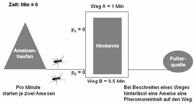
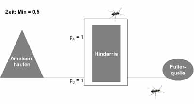
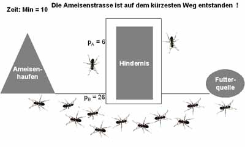

So how do they do they find the shortest possible path?
The answer lies in the pheromones of the ants. Pheromones are scents which help ants to orient oneself. First, ants will randomly explore the surrounding of their nest. Once an ant found an amount of food, she will carry it back to the nest and emit the pheromon, the amount of pheromon depends on the quality and quantity of food it just has found. Some kinds of ants as well constantly emit the pheromones, even before they have found some food.
Now, following ant will tend to choose a way which is marked more intensively with the pheromone. As more ants will choose the way, the amount of pheromone will increase potentially, and the way will be much more attractive for following ants.

In case that different ants found different ways to the same source of food, after a while the shorter path will be automatically marked with more pheromone, as the time for the longer path is higher. So more ants will way more frequently pass the shorter path, such that the shorter path will be marked more.

For example let two ways exist and let one be of length half the other. Consider two ants starting at the same time on those two not yet marked ways (\(P_A = 0\) and \(P_B = 0\) ). The ant on the shorter path will already have reached the source, when the other is just on the half of its way. When the first ant will already be back at the nest, the second ant will just be at the source. So now when other ants will leave the nest, they will find those two possible ways, but the shorter one will already be marked twice, as the previous ant has already passed it twice (\(P_A = 2\)). The longer path will only be marked once. So the following ants will more likely choose the shorter path.

When finally the ant on the long trail will reach the nest, multiple ants will have chosen the short path so the shorter path will be marked more quickly.

As each ants continues on emitting the pheromone, the scents will be concentrated on the better and shorter paths. Important as well is the phenomen of evaporation, the scent will not mark a path for ever. After a while the pheromone will be evaporated. So the long way an ant once has chosen will not be considered by following ants at some point of time. Even more, once a even shorter path is found, the short path before will eventually disappear.
So a suboptimal trail can be even optimized by this behaviour. This happens as every ant still decides on its own which way to choose and some ants will try other trails. And the phenomen repeats. Finally, they will find the shortest possible path.
Researches have shown that if the ants found two trails of the same length, the ants will prefer one of them, but the preference does not depend on the trail which was found first. Up to a certain amount of pheromone on the trail a change of the preference of the trail seems still to be possible.
This kind of swarm intelligence has not only been observed for ants, as well some kinds of fish and birds and other insects are capable of such a kind of intelligence. Important is that there is no centralized system to organise them in swarms. The swarm intelligence is as well quite interesting for the adaption to artificial intelligence.